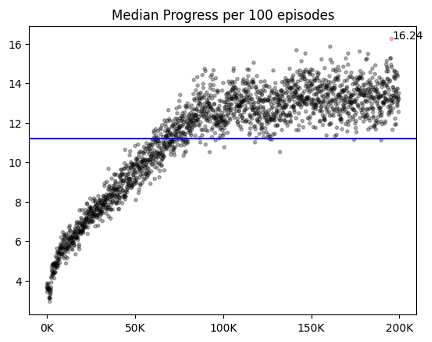
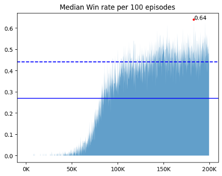
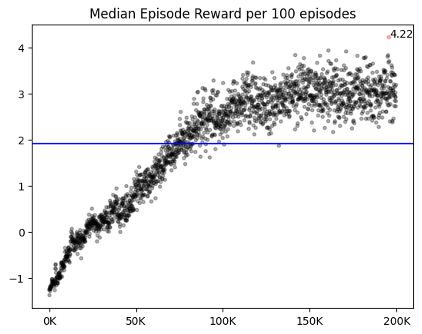
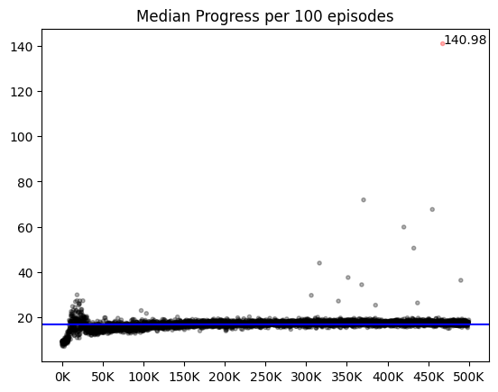
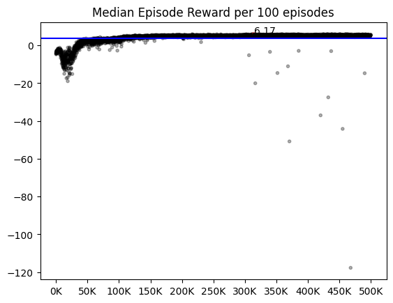
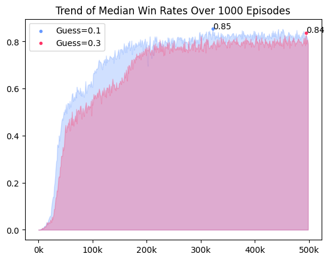

[Minesweeper/04] Trouble Shooting
04. Trouble Shooting
이미 까진 타일을 또 누르는 사건
지뢰찾기 테스크에서 가장 중요한 문제는 이미 열린 타일을 또 누르는 행동을 방지하는 것이다. 이미 열린 타일을 또 누르는 행동은 직접적인 패배에 기여하지 않지만, 탐험률이 없는 상황에서 무한 에피소드 문제를 야기시키고 중복 데이터를 생성해 승리에 기여하는 양질의 데이터를 리플레이 메모리에 쌓지 못한다.
- 이미 열린 타일을 누르는 행동 :
no_progress
1. 행동을 강제로 제한하는 방법
@sdlee94의 코드에서 아이디어를 얻어 이미 까진 타일의 Q값을 전체 Q값 중 최소값으로 죽여 선택을 강제로 하지 못하게 만들었다. 이 방법론은 이미 까진 타일을 절대 누르지는 않지만, 44% 이상으로 성능이 나아지지 않았다. 까진 타일을 강제로 선택하지 못하게 하는 것이 일종의 안내판이 될 것이라 생각했지만 나아지지 않는 성능을 보며 오히려 이 방법론이 환경의 복잡도를 높이고 있다는 생각이 들었고, 원인을 고민했다.
-
이미 까진 타일을 또 누르는 행동은 게임 클리어를 막는 주요 고려 대상이다. 방법론을 적용할 때는 이 행동이 승리나 패배에 기여하지 않기 때문에 그다지 의미가 없는 행동이라 생각했다. 하지만 지뢰찾기는 지뢰를 제외한 모든 타일을 까는 게임이다. 다시 말해 이미 까진 타일을 또 누르는 행동은 게임의 승리에 다가가도록 만들지 못하기 때문에 게임 승리를 방해하는 요소다. 따라서 이 행동을 강제로 제한하는 것은 지뢰가 아닌 모든 타일을 전부 다 까도록 제대로 유도하지 못하기 때문에 환경의 복잡도를 높인다.
-
행동을 제한하는 것이 DQN의 모든 부분에 적용되지 않는다. 이미 까진 타일을 누르지 못하게 하는 것은 행동을 정하는 매소드인
get_action(state)에만 적용했다. 하지만 이 상황에서는 리플레이 메모리에서 state-action 페어를 꺼내 예측값을 만들 때는 문제가 없지만, next_state를 받아 다음 타겟값을 만드는 타겟 신경망에서 문제가 생긴다. 타겟 신경망을 통해 얻은 Q 값들 중 최대값은 타겟값이 되는데, 이때 최대값을 갖는 행동은 이미 까진 타일을 누르는 행동일 수 있다. 이 값은 next_state가 줄 수 있는 최대의 가치이지만 리플레이 메모리의state-action-reward에는 이미 까진 곳을 누르는 사건이 존재하지 않기 때문에 제대로 된 값이 나오도록 학습된 신경망을 사용할 수 없다. 따라서 이 값은 제대로 근사될 수 없기에 신경망의 한계를 야기시킨다.
2. valid / test에서 이미 열린 타일을 누르면 에피소드 강제 종료
이미 까진 타일을 강제로 선택하지 못하게 만들지 않으면, valid에서 이미 누른 타일을 또 누르는 행동은 필연적으로 발생한다. 코드 상 valid는 학습 도중 최고 승률이 나올 때마다 실행되기 때문에 초반부터 valid가 돌아가게 된다. 이 시기는 입실론에 의해, 운에 의해 승리에 도달하는 경우가 대부분이기에 환경의 구조를 제대로 이해하지 못한다. 따라서 실제 보상 회로와 관계없이, valid나 test에는 이미 까져있는 타일을 누르면 강제로 에피소드를 종료해 무한 에피소드 문제를 방지했다. 그 결과 학습에서는 랜덤한 행동을 통해 탈출할 수 있었던 에피소드가 강제로 종료되어 학습과 valid/test 사이에 20% 가량의 성능 차이가 존재했다.
3. no progress : done = True
이미 누른 타일을 또 누르면 에피소드를 강제로 종료시켰다. 이 방식은 done=False인 방법론들보다 valid/test와 학습의 win rate 격차가 적었다. done의 T/F는 학습 양상에서 차이를 보였다. 같은 것을 눌러도 학습이 종료되다보니 done이 False일 때보다 에피소드의 길이가 절대적으로 짧았고, 그 결과 리플레이 메모리에 차는 데이터 양이 적었다. done이 False인 애들은 5만 에피소드에서 이미 50% 이상의 승률을 보였지만, done이 True인 애들은 5% 정도의 승률을 보였다. 하지만 승률이 안 나올 뿐 에피소드의 총 보상과 step 수는 빠르게 증가했고, 10만 에피소드부터는 done=False인 애들의 성능을 따라잡았다. 60만까지 돌렸을 때 test의 결과는 평균 76%로, done=False인 애들보다 2% 가량 높은 승률을 보였다.
|  |  |  |
4. Reward : -0.5 –> -1
처음 no progress의 리워드를 구성할 때엔 이 행동이 단순히 게임을 진전시키지 못할 뿐, 게임의 승패에 직접적으로 관여하지 않는다고 생각해 -0.5(패배시의 절반) 크기의 리워드를 부여했다. 하지만 죽지않고 타일을 까는 행동이 좋고, 그렇지 못한 행동이 전부 나쁜 행동이라 지뢰찾기를 단순화시키면 이 행동은 지뢰를 밟는 것만큼이나 나쁜 행동이다. 띠리서 이 때의 보상을 실패했을 때와 동일한 -1을 값을 주되, 지뢰를 밟았을 때와 달리 에피소드가 끝나지 않게 했다. 학습 초반에는 나쁜 행동임을 학습하지 못하기 때문에 무한 에피소드에서 탈출하기 쉽도록 탐험률을 느리게 감소시켰고, 이후에도 문제를 방지하고자 큰 최소 탐험률(1%)을 유지했다.
에피소드 후반 80% 정도의 안정적인 승률에 도달했을 때 최소 탐험률을 0.1%로 줄인 다음 20만 에피소드를 추가로 돌렸다. 큰 성능의 차이가 있진 않았으나, 가끔씩 리워드나 step에 극단값이 나타나는 것을 보아, 80%가 넘는 모델에서도 이미 까진 타일을 또 누르는 행동이 발생하지만, 빈도가 극히 적음을 알 수 있다. 또한 큰 최소 탐험률이 이미 까진 타일을 또 누를 때 신속한 탈출을 도왔음을 짐작할 수 있다.
|  |  |
주변 타일이 까지지 않은 타일을 선택하는 사건
- 주변 타일이 까지지 않은 타일을 선택하는 행동 :
Guess
사람이 지뢰찾기를 플레이할 때는 이미 까진 주변부 타일을 통해, 특정 타일이 지뢰일지 아닐지 판단한다. 하지만 강화학습의 에이전트는 지뢰찾기의 룰을 알지 못하며, 주변부 타일을 통해 값을 추론해야 한다는 로직을 알지 못한다. 따라서 주변부 타일이 까지지 않은 타일을 누르는 행동과 일반 진전과 다른 보상을 주면 로직을 더 빠르게 습득할 것이라는 가설을 세웠다. 이 행동을 Guess라 정의하고, 다른 세가지 보상을 주며 테스트했다.
01. 음의 보상을 줌
주변부 타일이 까지지 않으면 타일이 지뢰인지 추론할 수 없다. 따라서 Guess는 추론이 아닌 운에 승패를 맡겨 게임 오버의 가능성을 높인다. Guess를 최대한 선택하지 않도록 Guess행동에 음의 보상(-0.3)을 부여해 행동을 피하게 만들었다.
02. Progress보단 적은 양의 보상
no progress 단에서 이야기했듯 죽지 않은채 타일을 까는 행동은 좋고 그렇지 않은 행동이 전부 나쁜 행동이라 지뢰찾기를 단순화시키면 Guess는 죽지 않고 타일을 까기에 좋은 행동이다. 이 맥락에서 01에서 시도한 Guess에서 음의 보상을 부여하는 것은 논리적으로 옳지 않다. 01과 달리 음의 보상을 주진 않지만, Progress보단 덜 좋은 행동이라는 것을 강조하기 위해 Progress보다 작은 양의 보상(0.1)을 줬다.
03. [대조군] Guess == Progress
Guess 보상이 성능향상 및 초반 학습에 유의미한 영향을 주는지 확인하기 위해 Progress와 동일한 보상(0.3)을 줬다.
- 단일 채널 state 기준

Guess와 Progress를 구분하지 않고 동일한 보상을 준 경우가 전체적인 성능이 떨어지는 모습을 보였다. 초반 학습에서도, 학습 후반에서도 Guess에 차등을 준 보상 체계가 좋은 성능을 보임을 확인할 수 있었다.
- 멀티 채널 state 기준
다만 state가 다차원 경우에는 Guess를 주는 것과 주지 않는 것이 큰 차이가 없었다. 단일 채널 state에서는 Guess의 유무에 따라 성능 차이가 3%로 컸지만, 다차운 state는 0.5%로 매우 작았다.
주요 파라미터
강화학습에서 사용하는 여러 파라미터 중, learning rate가 학습에 가장 큰 영향을 미쳤다. 동일한 상황에서도 초기 lr이 너무 크거나 작으면 학습이 제대로 진행되지 않았다. 또한 계속 같은 크기의 lr로 학습을 시키는 것도 학습의 한계를 초래했다.